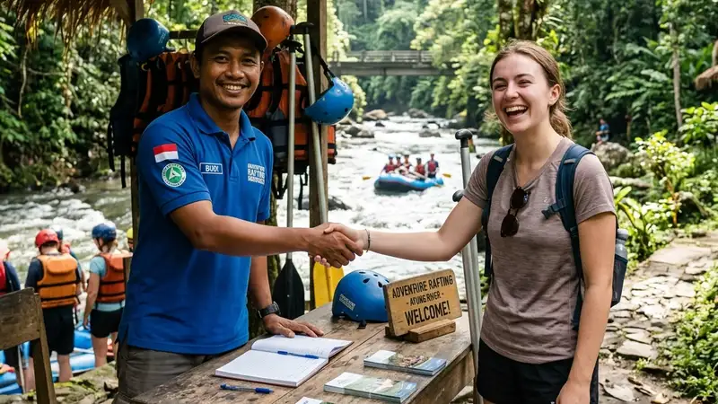

Cara memilih penyedia paket outbound dan rafting perusahaan yang tepat adalah dengan memeriksa legalitas usaha, sertifikasi pemandu, ketersediaan asuransi peserta, dan portofolio pengalaman menangani acara korporat.
- Legalitas usaha dan izin resmi menjadi dasar utama sebelum bekerja sama dengan operator.
- Sertifikasi pemandu rafting menunjukkan kesiapan operator menangani situasi darurat di sungai.
- Asuransi peserta wajib ditanyakan secara eksplisit sebelum menandatangani kontrak.
- Portofolio acara korporat sebelumnya membantu menilai pengalaman operator menangani kelompok besar.
- Prosedur pemesanan yang jelas mengurangi risiko miskomunikasi menjelang hari acara.
Apa Kriteria Utama Operator Outbound dan Rafting yang Terpercaya
Kriteria utama operator outbound dan rafting yang terpercaya meliputi izin usaha resmi dari dinas pariwisata setempat, pemandu bersertifikat keselamatan air, dan riwayat penanganan acara berskala besar.
Izin usaha resmi menunjukkan bahwa operator telah memenuhi standar minimum yang ditetapkan pemerintah daerah untuk kegiatan wisata air. Pemandu bersertifikat keselamatan air, di sisi lain, memastikan bahwa personel yang mendampingi peserta di sungai memiliki kemampuan menangani situasi darurat seperti perahu terbalik atau peserta yang jatuh ke air.
Riwayat penanganan acara berskala besar juga penting diperhatikan, terutama bagi perusahaan yang akan membawa puluhan hingga ratusan karyawan sekaligus. Operator dengan pengalaman menangani kelompok besar umumnya sudah memiliki sistem pembagian kelompok dan jadwal rotasi yang lebih matang dibanding operator yang baru menangani kelompok kecil.
Bagaimana Prosedur Pemesanan Paket Outbound dan Rafting Perusahaan
Prosedur pemesanan paket outbound dan rafting perusahaan umumnya dimulai dari konsultasi kebutuhan, survei lokasi atau diskusi jarak jauh, penyusunan proposal acara, hingga penandatanganan kesepakatan dan pembayaran uang muka.
Pada tahap konsultasi, pihak HR atau event organizer internal biasanya menyampaikan tujuan pelatihan, jumlah peserta, tanggal acara, dan anggaran yang tersedia. Berdasarkan informasi ini, operator akan menyusun proposal acara yang mencakup rangkaian aktivitas, jadwal, dan rincian biaya.
Setelah proposal disepakati, perusahaan umumnya diminta membayar uang muka sebagai tanda jadi, sementara pelunasan dilakukan mendekati atau pada hari pelaksanaan acara. Penting bagi perusahaan untuk memastikan seluruh kesepakatan, termasuk kebijakan pembatalan akibat cuaca buruk, tertulis jelas dalam dokumen kesepakatan sebelum pembayaran dilakukan.
Pertanyaan Apa yang Wajib Diajukan Sebelum Memilih Operator
Pertanyaan yang wajib diajukan sebelum memilih operator mencakup kebijakan pembatalan akibat cuaca, cakupan asuransi peserta, rasio pemandu terhadap jumlah peserta, dan opsi rencana cadangan jika sesi rafting tidak dapat dilaksanakan.
Kebijakan pembatalan akibat cuaca penting ditanyakan karena kondisi sungai dapat berubah mendadak, terutama pada musim hujan. Rasio pemandu terhadap jumlah peserta juga perlu dipastikan agar setiap perahu memiliki pengawasan yang memadai selama kegiatan berlangsung.
Perusahaan juga sebaiknya menanyakan apakah operator menyediakan rencana cadangan berupa permainan darat tambahan apabila sesi rafting harus ditunda atau dibatalkan mendadak, sehingga acara tetap berjalan efektif meski cuaca tidak mendukung.
Bagaimana Cara Menilai Kualitas Fasilitator Outbound
Cara menilai kualitas fasilitator outbound adalah dengan memeriksa pengalaman menangani kelompok korporat, kemampuan menyesuaikan permainan dengan tujuan pelatihan spesifik, dan gaya komunikasi yang sesuai dengan budaya perusahaan.
Fasilitator yang berkualitas biasanya mampu menjelaskan tujuan setiap permainan secara singkat sebelum aktivitas dimulai, sehingga peserta memahami relevansi permainan tersebut dengan situasi kerja mereka. Perusahaan dapat meminta contoh rangkaian permainan atau testimoni dari klien sebelumnya untuk menilai kesesuaian gaya fasilitasi dengan kebutuhan tim.
Menurut jurnal mengenai kontribusi industri MICE, kegiatan berbasis pertemuan dan pelatihan kelompok yang dikelola secara profesional dinilai memberikan nilai tambah yang lebih besar dibanding kegiatan wisata rekreasi biasa, sehingga kualitas fasilitasi turut menentukan seberapa besar manfaat yang diperoleh perusahaan dari kegiatan ini.
FAQ
Bagaimana cara memastikan operator outbound dan rafting memiliki izin resmi?
Perusahaan dapat meminta salinan izin usaha pariwisata dari operator dan mengonfirmasi keabsahannya melalui dinas pariwisata setempat apabila diperlukan.
Apa yang harus dilakukan jika cuaca buruk pada hari acara?
Perusahaan sebaiknya menanyakan kebijakan pembatalan dan rencana cadangan operator sejak awal, sehingga sudah ada opsi permainan darat pengganti apabila sesi rafting harus ditunda.
Apakah perlu meminta portofolio acara sebelum memilih operator?
Meminta portofolio atau testimoni dari klien korporat sebelumnya sangat disarankan untuk menilai pengalaman operator menangani kelompok besar dan kebutuhan pelatihan tim.
Arya
penulis artikel yang sudah berpengalaman di dalam dunia wisata outbound Batu Malang.